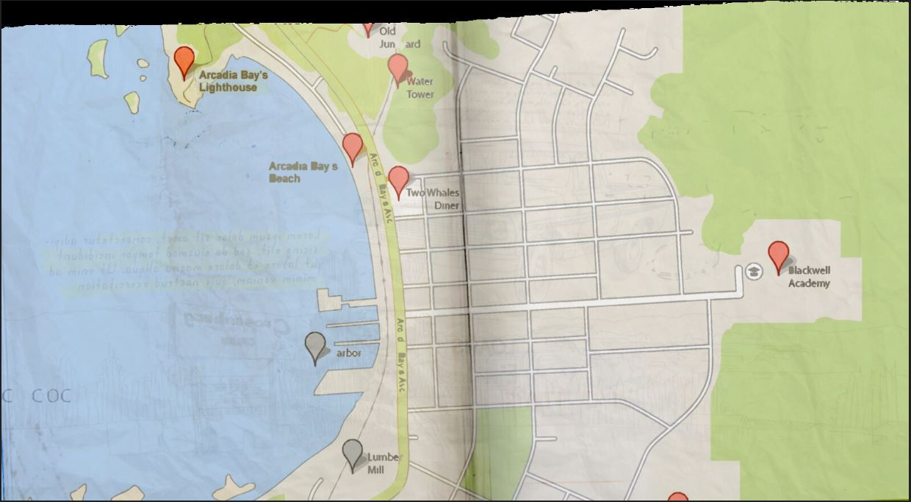

本文记录了 2023 年 7 月到 8 月建造《Life is strange》中 Arcadia Bay 的过程和参考资料。存档中包括一个存档 save 文件，lots 文件夹包含 9 个地块，以及 27 个人物（家庭）
由于存档使用了英文署名，所以在此也用英文描述人物和地块。
整体方位：学校朝向日落方向（西），整个小镇呈南北分布，地形由南向北依次升高，北面是一块高地，有绵延的森林。
主要地块位置：灯塔在北端，谷仓在东南端，学校在南北正中间，靠最东边的森林。双鲸餐厅在西北角，对面有加油站，临近海边。住宅都在中心平地。
地图参考：
BS 用于简称 BeforeStorm
存档中的人物：
| 序号 | 英文名 | 性别 | 性向 | 年龄 | 职业（in Sims4 Career） | 家庭/所属团体 |
|---|---|---|---|---|---|---|
| 1 | Chloe Price | 女 | 女 | 青少年 | ||
| 1 | Joyce Price | 女 | 男 | 中年 | ||
| 1 | David Madson | 男 | 女 | 中年 | ||
| 2 | Max Caulfield | 女 | 男 | 女 | 青少年 | |
| Ryan Caulfield | 男 | 女 | 中年 | ? Caulfield Family | ||
| Vanessa Caulfield | 女 | 男 | 中年 | ? Caulfield Family | ||
| 3 | Rachel Amber | 女 | 男 | 女 | ||
| Rose Amber | 女 | 男 | 青少 | Student Amber Family | ||
| James Amber | 女 | 女 | 青少 | Student Amber Family | ||
| 4 | Sera Gearhardt | 女 | 男 | 青少年 | ||
| 5 | Nathan Caulfield | 男 | 女 | 青少年 | ||
| 5 | Sean Caulfield | 男 | 女 | 中年 | ||
| 6 | Kate Marsh | 女 | 男 | 青少年 | Student Marsh Family | |
| 6 | Mrs. Marsh | 女 | 男 | 中年 | ? Marsh Family | |
| Richard Marsh 男 | 女 | 中年 | ? Marsh Family | |||
| Lynn Marsh | 女 | 男 | 青少年 | Student Marsh Family | ||
| 7 | Warren Graham | 男 | 女 | 青少年 | Student Blackwell Academy | |
| 8 | Victoria Chase | 女 | 男 | 青少年 | Student Blackwell Academy | |
| 9 | Dana Ward | 女 | 男 | 青少年 | Student Blackwell Academy | |
| 10 | Juliet Watson | 女 | 男 | 青少年 | Student Blackwell Academy | |
| 11 | Taylor Christensen | 女 | 男 | 青少年 | Student Blackwell Academy | |
| 12 | Stella Hill | 女 | 男 | 青少年 | Student Blackwell Academy | |
| 14 | Alyssa Anderson | 女 | 男 | 青少年 | Student Blackwell Academy | |
| 15 | Brooke Scott | 女 | 男 | 青少年 | Student Blackwell Academy | |
| 16 | Evan Harris | 男 | 女 | 青少年 | Student Blackwell Academy | |
| 17 | Stella Hill | 女 | 男 | 青少年 | Student Blackwell Academy | |
| 18 | Zachary Riggins | 男 | 女 | 青少年 | Student Blackwell Academy | |
| 19 | Courtney Wagner | 女 | 男 | 青少年 | Student Blackwell Academy | |
| 20 | Hayden Jones | 男 | 女 | 青少年 | Student Blackwell Academy | |
| 21 | Stephine?? | 女 | 女 | 青少年 | Student Blackwell Academy(BS) | |
| 22 | Micky North | 男 | 女 | 青少年 | Student Blackwell Academy(BS) | |
| 22 | Drew North | 男 | 女 | 青少年 | Student Blackwell Academy(BS) | |
| 22 | Anthony North | 男 | 女 | 中年 | Manual laborer | |
| 23 | Eliot Hampden | 男 | 女 | 青少年 | Student Blackwell Academy(BS) | |
| 24 | Walls Ray | 男 | 女 | 中年 | 校长，从（高中生活）教师中替换 Blackwell Academy | |
| 25 | MarkJefferson | 男 | 女 | 中年 | 教师，从（高中生活）教师中替换 Blackwell Academy | |
| 26 | ScienceTeacher?? | 女 | 男 | 中年 | 教师，从（高中生活）教师中替换 Blackwell Academy | |
| 27 | Frank | 男 | 女 | 中年 | Criminal X |
地块建筑
https://life-is-strange.fandom.com/wiki/Category:Locations
| 序号 | 住宅（Residential） | 官方朝向 | 面积 | LINK |
|---|---|---|---|---|
| 1 | Chloe`s house | 南 | 30*40 | Chloe`s Room Madsen_Household Garage |
| 2 | Rachel`s house | 西偏北 | 30*40 | James Amber s office](https://life-is-strange.fandom.com/wiki/James_Amber%27s_Office)</br><br>[Rachels room |
| 4 | Prescott Dormitory | 东 | 50*40 | Max Victoria Prescott Domitory Drew Dana Nathan Eliot 工具间 |
| 5 | Frank`s RV | X | 20*15 | RV |
| 序号 | 公共用地（Community Lots） | 类型 | 正门（入口）朝向 | 面积 | WikiLink |
|---|---|---|---|---|---|
| 1 | Blackwell Academy | 高中（高中生活） | 西 | 64*64 | Photography_Lab Science_Lab Principal_Wells_Office campus Hallway Blackwell_Academy |
| 2 | Swimming Pool & Parking Lot Swimming Pool | 南 | 64*64 | Swimming pool parking |
|
| 3 | Prescott Barn &Darkroom | 商业（来去上班，Prescott 家族持有） | 南 | 40*40 | Barn |
Dark Room |
|||||
| 4 | Junkyard | 公园 | 北 | 50*50 | Junkyard water tower |
| 5 | Two Whales Diner | 餐厅（来去上班） | 南 | 30*40 | LINK |
其他待建地块：
| 序号 | 公共用地（Community Lots） | 类型 | 正门（入口）朝向 | 面积 | LINK |
|---|---|---|---|---|---|
| 1 | 灯塔公园 | 西 | |||
| 2 | 沙滩 | 西 | Beach | ||
| 3 | 学校对面运动场 | 北 | |||
| 4 | 加油站 | link | |||
| 5 | 展览馆 | link | |||
| 6 | 墓地 | link | |||
| 7 | 医院 | Link kate Rachel |
careers.promote career_Teen_Highschool # 提高成绩
careers.promote 具体的career名称 # 工作晋升
Chloe
stats.set_skill_level Major_Charisma 3
stats.set_skill_level Major_Handiness 9
stats.set_skill_level Major_ResearchDebate 7
stats.set_skill_level Minor_LocalCulture 5
stats.set_skill_level Major_Logic 5
careers.promote computer
Joyce
stats.set_skill_level Major_Charisma 5
stats.set_skill_level Major_Parenting 8
stats.set_skill_level Major_HomestyleCooking 10
stats.set_skill_level Major_GourmetCooking 10
careers.promote ?
David
stats.set_skill_level Skill_Fitness 10
stats.set_skill_level Major_Handiness 10
careers.promote Military
Rachel
stats.set_skill_level Major_Charisma 8
stats.set_skill_level Skill_Fitness 6
stats.set_skill_level Major_Logic 6
stats.set_skill_level Major_Singing 7
stats.set_skill_level Major_Acting 9
stats.set_skill_level Minor_Dancing 5
stats.set_skill_level Major_Logic 5
careers.promote DramaClub
careers.promote highschool
Max
stats.set_skill_level Major_ResearchDebate 10
stats.set_skill_level Major_Comedy 3
stats.set_skill_level Major_Guitar 6
stats.set_skill_level Major_Charisma 10
stats.set_skill_level Major_Logic 7
stats.set_skill_level Major_Photography 8
stats.set_skill_level Minor_Media 5
Warren
stats.set_skill_level Major_ResearchDebate 7
stats.set_skill_level Major_Robotics 8
stats.set_skill_level Major_Video Gaming 8
stats.set_skill_level Major_Handiness 7
stats.set_skill_level Major_Charisma 5
stats.set_skill_level Skill_Fitness 6
stats.set_skill_level Major_Programming 8
stats.set_skill_level Major_Logic 8
careers.promote computer
careers.promote highschool
Eliot
stats.set_skill_level Major_Charisma 5
stats.set_skill_level Major_ResearchDebate 7
stats.set_skill_level Skill_Fitness 6
careers.promote computer
careers.promote highschool
Victoria
stats.set_skill_level Major_Charisma 7
stats.set_skill_level Major_Photography 7
stats.set_skill_level Major_Painting 10
stats.set_skill_level Skill_Fitness 6
stats.set_skill_level Major_Logic 7
careers.promote highschool
Kate
stats.set_skill_level Major_Charisma 6
stats.set_skill_level Major_Violin 10
stats.set_skill_level Major_Writing 7
Nathan
stats.set_skill_level Major_Charisma 5
stats.set_skill_level Major_Photography 7
stats.set_skill_level Minor_LocalCulture 5
stats.set_skill_level Skill_Fitness 6
stats.set_skill_level Major_Herbalism 5
stats.set_skill_level Major_Mischief 10
stats.set_skill_level Major_ResearchDebate 7
careers.promote highschool
Jefferson
stats.set_skill_level Major_Photography 10
stats.set_skill_level Major_Charisma 10
stats.set_skill_level Major_Mischief 10
stats.set_skill_level Skill_Fitness 10
Brooke
stats.set_skill_level Major_ResearchDebate 8
stats.set_skill_level Major_Robotics 9
stats.set_skill_level Major_Video Gaming 7
stats.set_skill_level Major_Handiness 6
stats.set_skill_level Major_Charisma 4
stats.set_skill_level Skill_Fitness 5
stats.set_skill_level Major_Rocket Science 5
stats.set_skill_level Major_Logic 9
careers.promote computer
careers.promote highschool
Dana
stats.set_skill_level Major_ResearchDebate 5
stats.set_skill_level Major_Charisma 10
careers.promote cheer
Juliet
stats.set_skill_level Major_ResearchDebate 5
stats.set_skill_level Major_Charisma 8
careers.promote DramaClub
Steph
stats.set_skill_level Major_ResearchDebate 8
stats.set_skill_level Skill_Fitness 5
stats.set_skill_level Major_Video Gaming 7
stats.set_skill_level Major_Charisma 7
Drew
stats.set_skill_level Skill_Fitness 10
stats.set_skill_level Major_Charisma 8
stats.set_skill_level Major_ResearchDebate 7
careers.promote football
careers.promote highschool
Mikey
stats.set_skill_level Major_ResearchDebate 8
stats.set_skill_level Skill_Fitness 5
stats.set_skill_level Major_Video Gaming 7
stats.set_skill_level Major_Charisma 5
Frank
stats.set_skill_level Major_Herbalism 10
stats.set_skill_level Major_Handiness 9
stats.set_skill_level skill_Dog 5
stats.set_skill_level Major_Vet 6
mod 收集集合但是有些失效了，下面整理了一些还能下载的
服装：
chloe 的上衣
chloe 的纹身
max 的书包
风暴之前服装组合
物品：
医院气球，挂件等杂物
各种书包
文具组合
笔电
告示板和人偶
食物组合
墙壁照片装饰
人物：
盖完发现这个，带 mod的ArcadiaBay地块：DstSims 盖的 ArcadiaBay
DstSims 制作的 cc
校园
校园可参考：The real Blackwell Academy: OREGON STATE UNIVERSITY virtual visit
住宅房屋可参考的 Arcadia Bay Houses
按照原型Garibaldi可以在美国的房屋出售网站上找到的一些房屋
https://www.redfin.com/OR/Garibaldi/109-Franklin-Dr-97118/home/135160093
https://www.redfin.com/OR/Garibaldi/614-Ginger-Ave-97118/home/135229202
https://www.redfin.com/OR/Garibaldi/103-14th-St-97118/unit-1N1021BC01900/home/183218981
https://www.redfin.com/OR/Garibaldi/305-Cypress-Ave-97118/home/135229230
https://oberlin.college-tour.com/map
https://www.oberlin.edu/blogs/life-strange#:~:text=Blackwell Academy%2C located in the,catastrophic tornado%2C of course).
{kind=link}